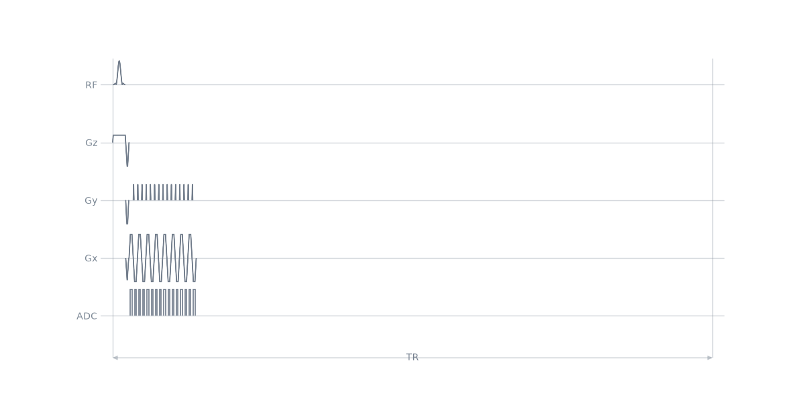
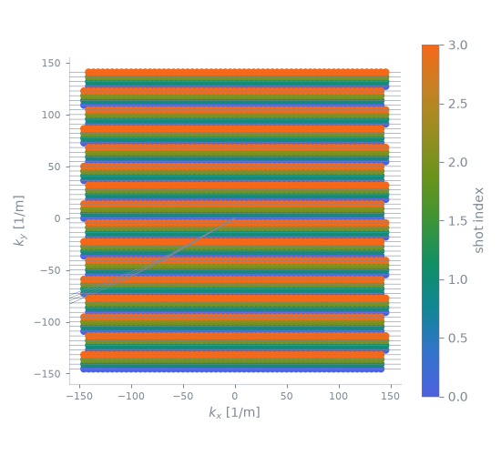
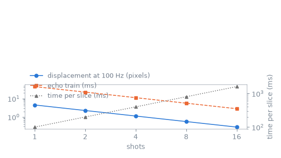

Note
Go to the end to download the full example code.
Segmented echo planar#
The multi-echo train of the previous lesson samples the same k-space line several times. This lesson adds a phase-encode blip between the echoes, so that one excitation acquires several k-space lines. The number of excitations (shots) over which the matrix is divided is then a free parameter, and it determines both the scan time and the off-resonance displacement in the image.
The measured relationship is the bandwidth per pixel along the phase-encode direction, which increases in proportion to the number of shots, against the number of excitations and hence the scan time. The single-shot limit of this relationship is the subject of the next lesson, Single-shot echo planar.
Learning objectives#
After this lesson, you should be able to:
create a phase-encode blip from the number of lines it advances and the field of view;
assemble the blocks of one shot, with each blip in the block of the readout gradient it follows;
verify from the k-space analysis that interleaved shots cover every line once;
compute the phase-encode bandwidth per pixel and the off-resonance displacement as functions of the shot count.
Blips between the echoes#
Within a shot, consecutive echoes are separated by as many k-space lines as
there are shots, so that the shots interleave and together cover every line.
make_phase_blip() takes that number of lines and the field
of view rather than an area, and solves the shortest gradient that delivers
it.
import numpy as np
import pypulseqpp as pp
system = pp.Opts(
max_grad=32.0,
grad_unit="mT/m",
max_slew=130.0,
slew_unit="T/m/s",
rf_dead_time=100e-6,
rf_ringdown_time=20e-6,
adc_dead_time=10e-6,
)
FOV = 220e-3
MATRIX = 64
THICKNESS = 5e-3
FLIP_ANGLE_DEG = 90.0
REPETITION_TIME = 100e-3
DWELL = 4e-6
SHOTS = 4
rf, gz, gz_reph = pp.make_sinc_pulse(
flip_angle=np.deg2rad(FLIP_ANGLE_DEG),
duration=2e-3,
slice_thickness=THICKNESS,
apodization=0.5,
time_bw_product=4.0,
delay=system.rf_dead_time,
system=system,
use="excitation",
return_gz=True,
)
# The readout of the previous lesson, at a fixed dwell time.
acquisition = MATRIX * DWELL
raster = system.grad_raster_time
gx = pp.make_trapezoid(
channel="x",
amplitude=MATRIX / FOV / acquisition,
flat_time=raster * np.ceil(acquisition / raster),
system=system,
)
adc = pp.make_adc(num_samples=MATRIX, dwell=DWELL, delay=gx.rise_time, system=system)
gx_pre = pp.make_trapezoid(
channel="x",
area=-(gx.amplitude * gx.rise_time / 2 + (MATRIX / 2 + 0.5) / FOV),
duration=5e-4,
system=system,
)
blip = pp.make_phase_blip(channel="y", fov=FOV, steps=SHOTS, system=system)
print(
f"echo spacing {1e3 * pp.calc_duration(gx):.3f} ms, "
f"blip {1e6 * pp.calc_duration(blip):.0f} us for {SHOTS} lines, "
f"readout {1e3 * gx.amplitude / 42.576e6:.1f} mT/m "
f"rising in {1e6 * gx.rise_time:.0f} us"
)
echo spacing 0.700 ms, blip 120 us for 4 lines, readout 26.7 mT/m rising in 220 us
One shot#
A shot is the excitation, the prewinders, and then one block per echo. The blip is played in the same block as the readout gradient it follows, on the other axis, so the echo spacing remains equal to the duration of one readout gradient. The phase-encode prewinder of each shot moves the k-space position to the first line of that shot.
def segmented(shots, lines=MATRIX):
"""A segmented echo planar acquisition covering ``lines`` k-space lines."""
step = pp.make_phase_blip(channel="y", fov=FOV, steps=shots, system=system)
train = lines // shots
seq = pp.Sequence(system=system)
for shot in range(shots):
start = pp.make_trapezoid(
channel="y", area=(-lines / 2 + shot) / FOV, duration=5e-4, system=system
)
played = (
pp.calc_duration(rf, gz)
+ pp.calc_duration(gx_pre, start, gz_reph)
+ train * pp.calc_duration(gx)
)
seq.add_block(rf, gz)
seq.add_block(gx_pre, start, gz_reph)
for echo in range(train):
readout = pp.scale_grad(gx, (-1.0) ** echo)
# The blip advances k-space before every echo but the first, and
# plays inside the rise of the readout gradient it shares a block
# with, so it is complete before the acquisition window opens.
if echo == 0:
seq.add_block(readout, adc)
else:
seq.add_block(readout, step, adc)
seq.add_block(
pp.make_delay(
pp.round_to_raster(
REPETITION_TIME - played, system.block_duration_raster
)
)
)
return seq
seq = segmented(SHOTS)
ok, errors = seq.check_timing()
print(
f"timing {ok}, {seq.num_blocks} blocks, {MATRIX // SHOTS} echoes per shot, "
f"{seq.duration()[0]:.3f} s"
)
seq.paper_plot(tr=1)

timing True, 76 blocks, 16 echoes per shot, 0.400 s
The raster the shots build#
Each excitation contributes every fourth line, and the four together cover the matrix, each line once.
k_adc = seq.calculate_kspacePP()[0]
# Every sample of one echo shares that echo's phase-encode line.
lines = np.round(k_adc[1] * FOV).astype(int)
covered, samples = np.unique(lines, return_counts=True)
print(
f"{covered.size} lines from {covered.min()} to {covered.max()}, "
f"each acquired {(samples // MATRIX).min()} to {(samples // MATRIX).max()} times"
)
pp.plot.plot_kspace(seq, color_by="shot", plane="xy")

64 lines from -32 to 31, each acquired 1 to 1 times
Distortion against shot count#
Off-resonance displaces a voxel along the phase-encode direction by the ratio of its offset to the bandwidth per pixel in that direction. That bandwidth is not the receiver bandwidth: the phase-encode direction is traversed one line per echo, so one line takes an echo spacing divided by the number of shots, and the bandwidth per pixel is
with \(S\) shots, \(N\) lines and an echo spacing \(\mathrm{ESP}\). It is smaller than the receiver bandwidth per pixel by the number of echoes in a shot, which is why an echo planar image is distorted along the phase-encode direction and not along the readout.
OFF_RESONANCE_HZ = 100.0
COUNTS = (1, 2, 4, 8, 16)
echo_spacing = pp.calc_duration(gx)
trade_off = []
for shots in COUNTS:
phase_bandwidth = shots / (MATRIX * echo_spacing)
trade_off.append(
{
"shots": shots,
"echoes": MATRIX // shots,
"train": (MATRIX // shots) * echo_spacing,
"phase_bandwidth": phase_bandwidth,
"displacement": OFF_RESONANCE_HZ / phase_bandwidth,
"scan": shots * REPETITION_TIME,
}
)

shots echoes train BW per pixel displacement per slice
1 64 44.80 ms 22.3 Hz 4.48 px 100 ms
2 32 22.40 ms 44.6 Hz 2.24 px 200 ms
4 16 11.20 ms 89.3 Hz 1.12 px 400 ms
8 8 5.60 ms 178.6 Hz 0.56 px 800 ms
16 4 2.80 ms 357.1 Hz 0.28 px 1600 ms
Displacement and echo train fall as the reciprocal of the shot count, and the scan time rises in proportion to it, so the segmentation is a straight exchange of time for geometric fidelity. The other terms of it are the echo spacing, which the previous lesson shortened with the receiver bandwidth and which enters the displacement in the same way, and the number of lines, which the prescription fixes.
Segmentation does not address two effects. Each shot is excited separately, so any motion or phase change between them appears as an inconsistency between interleaved lines rather than as blurring within one; and the displacement it reduces is a property of the trajectory, not of the reconstruction, so an image acquired in one shot is distorted whatever is done to it afterwards.
Total running time of the script: (0 minutes 0.339 seconds)